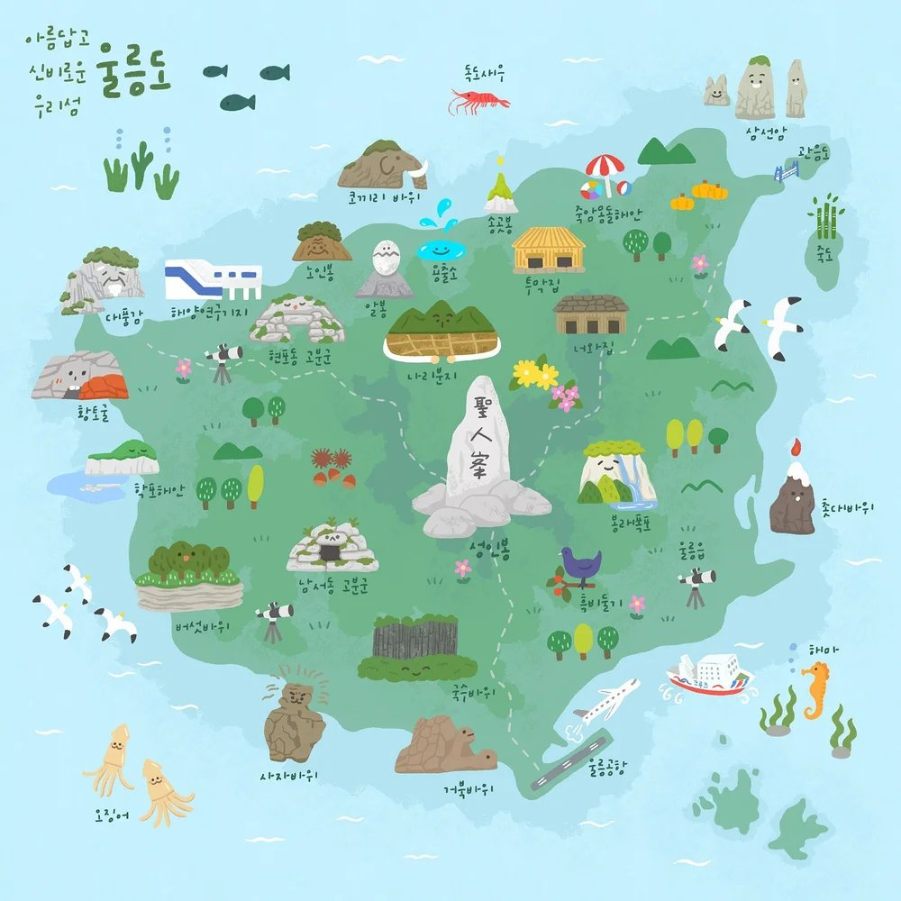

기간 · 동행 · 테마만 알려주시면
1분 만에 나만의 울릉도 코스가 완성됩니다.
배 시간에 맞춘 현실적인 동선으로 짰습니다. 취향에 따라 골라 조합해 보세요.
 인기 1위
인기 1위
12345678숫자 순서대로 이동해요울릉도의 정수를 모두 담은 대표 코스. 첫날은 도동 주변, 둘째 날은 섬 북쪽, 셋째 날은 서쪽으로 이동하며 일주합니다.
 여유롭게
여유롭게2박 3일 일주 코스에 독도 방문과 성인봉을 더한 완전판. 기상 변수에 대비할 예비 시간도 확보됩니다.
 짧고 굵게
짧고 굵게시간이 없어도 울릉도의 진한 인상을 남기고 싶은 분들께. 도동 주변에서 모든 걸 해결하는 코스입니다.
 여유롭게
여유롭게배 시간 전후로 여유가 생겼을 때. 무리하지 않고 걷고, 마시고, 바라보는 코스입니다.